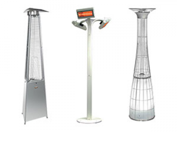

Terasiniai lauko šildytuvai | Elstava
 Akcijos Prekių katalogas Jūsų krepšelis Apie mus Naujienos Prekių katalogas Naudinga informacija D.U.K Karjera Kontaktai Katilai Šilumos siurbliai Saulės kolektoriai Akumuliacinės talpos Šildytuvai Terasiniai lauko šildytuvai Dujiniai židiniai Moduliniai mazgai Katilinių ir šildymo sistemų įranga Automatika, valdikliai, termostatai Vėdinimo įranga Oro kondicionieriai Vandens filtrai ir apdorojimas Dujų detektoriai ir armatūra Serviso įranga Automatizuoti šilumos punktai LT LT Apie mus Naujienos Prekių katalogas Naudinga informacija D.U.K Karjera Kontaktai Home Prekių katalogas Terasiniai lauko šildytuvaiTerasiniai lauko šildytuvai
Atvaizdavimas: Cols RowsPatikimi dujiniai ir elektriniai terasiniai lauko šildytuvai. Platus prekių pasirinkimas, patogi rankinė ir nuotolinio valdymo sistema, paprastas šildytuvų naudojimas. Nepalankioms oro sąlygoms atspari įranga gali būti naudojama po atviru dangumi (be pastogės).
Akcijinės prekės 7 Dujiniai lauko šildytuvai 11 Elektriniai lauko šildytuvai 15 Lauko staliukai su šildymu 0Klientų atsiliepimai
Greitai sureagavo į problemą, atliko įrangos keitimą, patikrino. Nuo bendravimo iki darbo kultūros 10 balų. Giedrius SĮ "Susisiekimo paslaugos" Grįžti į ankstesnę kategoriją Infraraudonųjų spindulių dujinis lauko šildytuvas BIGH-3 52.00 € 45.00 € Terasų šildytuvas Rio IP (1.5kW, baltos spalvos) 237.00 € Terasų šildytuvas Rio IP (1.5kW, juodos spalvos) 237.00 € Terasų šildytuvas Rio IP (1.5kW, sidabrinės spalvos) 237.00 € Terasų šildytuvas Sorrento IP (1.5kW, juodos spalvos, aukso sp. reflektorius) 258.50 € 239.00 € Terasų šildytuvas Sorrento IP (1.5kW, baltos spalvos) 246.00 € Terasų šildytuvas Sorrento IP (1.5kW, juodos spalvos) 246.00 € Terasų šildytuvas Sorrento IP (1.5kW, sidabrinės spalvos) 246.00 € Terasų šildytuvas Sorrento IP (2.0kW, baltos spalvos) 262.00 € Terasų šildytuvas Sorrento IP (2.0kW, juodos spalvos) 262.00 € Terasų šildytuvas Sorrento IP (2.0kW, sidabrinės spalvos) 262.00 € Terasų šildytuvas Rio Grande (2.0kW, juodos spalvos, aukso sp. reflektorius) 290.50 € 269.00 € Terasų šildytuvas Sorrento IP (2.0kW, juodos spalvos, aukso sp. reflektorius) 274.50 € Terasų šildytuvas BAHAMA (1.5kW, juodos spalvos, Low-Glare) 308.00 € 289.00 € Terasų šildytuvas MONACO (1.5kW, juodos spalvos, Low-Glare) 290.00 € Terasų šildytuvas XDI 8 (3.3 kW, G20) 766.04 € Terasų šildytuvas XDI 8 (3.3 kW, LPG) 766.04 € Terasų šildytuvas XDI 10 (3.8 kW, G20) 813.54 € Rodyti po: 9 18 36 1 2 3Aukštos kokybės dujiniai ir elektriniai terasiniai lauko šildytuvai, lauko staliukai su šildymu. Dujiniai lauko šildytuvai gali būti pastatomi arba pakabinami. Priklausomai nuo klientų poreikių, galima rinktis suskystintų arba gamtinių dujų įrangą. Pirkėjų patogumui siūloma tiek rankinė, tiek nuotolinė valdymo sistema. Unikali konstrukcija ir novatoriški technologiniai sprendimai užtikrina maksimalų produkcijos patikimumą ir paprastą naudojimą. Pakabinami šildytuvai išsiskiria lengvu montavimu ir patikima eksploatacija. Mobili įranga gali lengvai judėti grindų paviršiumi ir prisitaikyti prie individualių gyvenamosios aplinkos poreikių. Elektriniai lauko šildytuvai yra atsparūs nepalankioms oro sąlygoms. Profesionali įranga gali būti naudojama tiek patalpų viduje, tiek išorėje, įskaitant ir vėjuotą aplinką ar sunkiai apšildomus statinius. UAB „Elstava“ siūlo platų terasinių lauko šildytuvų pasirinkimą. Dalies modelių išvaizda gali būti keičiama, priklausomai nuo pirkėjų poreikių, pvz., galima keisti šoninių sienelių spalvą, uždėti fotografijas ar logotipų ženklus.
Mūsų atstovaujamiprekių ženklai: Mūsų atstovaujami prekių ženklai: Kompanija Apie mus Naujienos Naudinga informacija D.U.K Karjera Kontaktai Informacija Privatumo politika Pirkimo taisyklės Terminai ir sąlygos Prekių pristatymas Garantijos ir grąžinimas Pirkimas išsimokėtinai Pakuočių atliekų tvarkymas Elektros ir elektroninės įrangos atliekų tvarkymas Produkcija Katilai Šilumos siurbliai Saulės kolektoriai Akumuliacinės talpos Šildytuvai Terasiniai lauko šildytuvai Automatika, valdikliai, termostatai Oro kondicionieriai UAB Elstava Informacija +370 (612) 44222 info [at] elstava [dot] lt Skype Naujienų prenumerata © 2020 UAB "ELSTAVA". Visos teisės saugomos. Bendraukime internete: Facebook Instagram YouTube Pavadinimas
turinys